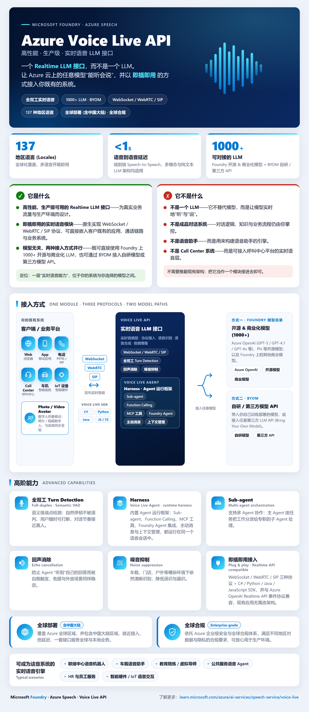
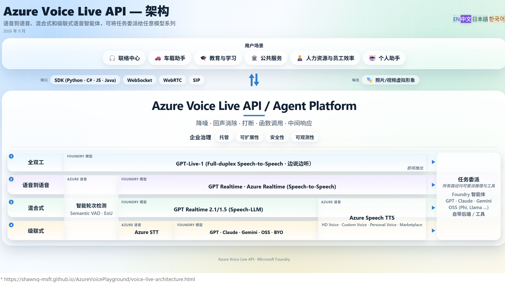
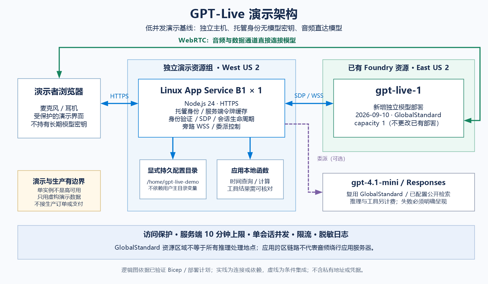

1. 传统语音机器人的三大工程顽疾Legacy Pain
- 机械抢话与误打断：传统能量阈值 VAD 把用户的自然附和（“嗯哼、对”）、思考停顿、咳嗽或旁人说话全部当作打断指令，导致对话支离破碎。
- 级联交接损耗与副语言丢失：`STT ➔ LLM ➔ TTS` 三段串行不仅累加延迟，还在转文字瞬间丢失了用户的情绪、迟疑与语调重音。
- 模型幻觉与业务失控：若让端到端语音大模型直接口头承诺库存、算账或改单，极易出现算错价格或口头“假取消”。
点击下方三个架构视图标签，逐层拆解从「产品全景定位」➔「四层语音管线与统一任务委派」➔「GPT-Live Azure 三平面生产落地」的完整工程逻辑。点击任意架构图可全屏高清放大。

企业客户往往同时拥有网页、App、SIP 呼叫中心（Genesys/Twilio/ACS）与车载/IoT 硬件。过去每增加一种终端或更换底层大模型，合作伙伴都要重写一套音频流编解码、回声消除、断句 VAD 和工具调用胶水代码。
一次集成，全球复用：覆盖 137 种地区语言与全球 30+ 区域（含中国大陆世纪互联 China East 2 / North 2 / North 3），提供照片级/视频级 Avatar 数字人同步驱动，将多渠道语音 Agent 交付周期从数月缩短至数周。
向客户强调：Voice Live API 不是单一 LLM，也不是用来替代客户现有 CRM/呼叫中心平台的封闭黑盒，而是赋能任意业务系统“听得懂、说得自然、调得动工具”的标准实时语音底座。

不同业务对“拟人交互度、品牌专属音色、垂直领域生僻词准确率、单分钟成本”的权重截然不同。单一端到端模型无法同时满足“0.1美元/小时超低成本”和“企业定制品牌音色”，单一级联架构又无法实现“边说边听自然附和”。
无论左侧采用哪一档语音管线，右侧均通过统一的 Task Delegation 将深度推理、RAG、搜索与工具调用委派给 Foundry 智能体、GPT/Claude/Gemini、OSS 或客户自有后端——真正实现“快脑管实时语音交互，慢脑管严谨业务逻辑”。
不要在客户立项第一天争论“端到端还是级联”：基于 Voice Live API 统一契约，高端顾问场景用 Tier ① 全双工，高并发客服热线用 Tier ③ 混合式，强专有名词/成本敏感场景用 Tier ④ 级联式，后台工具层代码 100% 复用。

1) `gpt-live-1` 不签发浏览器临时客户端密钥，如何保证前端零密钥泄露？
2) 如果音频流经过应用服务器转发，Node.js 带宽与抖动如何承受？
3) 后台工具查出长答案后，如何安全交还给正在说话或倾听的语音模型？
由于音频流在浏览器与 `East US 2` 模型间直连，App Service 仅在建连与旁路工具触发时参与；因此缩短 Web 应用与用户的距离只加速页面加载与握手，不改变浏览器到语音模型区域的物理网络延迟。
| 管线层级 (Pipeline Tier) | 核心组件组合 | 端到端延迟与抗扰表现 | 音色与领域词表可控性 | 目录成本基准 (USD) | 首选适用场景 |
|---|---|---|---|---|---|
| ① 全双工 (Full-Duplex) | Foundry `GPT-Live-1` + 旁路任务委派 | 边说边听 · 8 探针通过率 95% (20/21) | 13 种内置音色 (Marin 等) · 旁路工具纠错 | $3.00 / 小时 ($0.05/min) + 旁路推理 Token | 旗舰门店顾问、智能座舱免唤醒、高拟人陪练 |
| ② 语音到语音 (S2S) | `GPT Realtime` / `Azure Realtime` | 亚秒级端到端 · 8 探针通过率 52% (11/21) | 内置多模态音色 | 按 Realtime 音频输入/输出 Token 计费 | 通用低延迟语音对话与多模态情绪感知 |
| ③ 混合式 (Hybrid) | `Semantic VAD·EoU` + `GPT Realtime` + `Azure TTS (DragonHDFlash / Custom)` | Paytm 生产实测 P50 590ms / P90 840ms | 支持 700+ 音色 / HD Flash (MOS 4.34) / 品牌定制音色 | Realtime 输入 + TTS $15–$22 / 1M 字符 | 高并发品牌客服热线（如 Paytm 20万通/天） |
| ④ 级联式 (Cascaded) | `Semantic VAD·EoU` + `Azure STT (Custom / MAI-2)` + `任意 LLM` + `Azure TTS` | 依赖分段策略 · STT 吞吐高达 360x RTFx | 最高可控：Custom Speech 同音词表 (CER 降 >10%) + BYOM | STT 低至 $0.10/小时 (`MAI-2`) + 文本 Token + TTS | 新茶饮/医疗/工业强专有名词、大批量低成本语音Agent |
所有引用数据严格区分 REPORTED（源自 FY27 Product Updates 官方评测页码） 与 MEASURED（源自本仓库自动化测试与 Retail API 实测），已同步封装为 7-Card 4:5 视觉评测卡片。
turbo998/benchmark-harness-engineering 规范）
4:5 Carousel Deck · 7 Cards
测试报告已严格按照 visual-report-card-format.md 与 src/benchmark_harness/cards.py 渲染规范重构为 7 页 4:5 视觉卡片（冷灰高对比底色 #f8fafc、顶部 10px 靛蓝渐变条、结论先行标题、Auto / Confirm / Human 置信度动作胶囊、底部内嵌完整 JSON 数据集）：
session.delegation.created ➔ SpeechDeliverydata/reported/voice-live-gpt-live-1/测试方法：5 维主观交互评分（1–5 分）+ 8 类真实环境干扰探针（每类探针连续执行 3 轮试验，共 24 轮；不含附和项为 21 轮）。
| 评测项 (Metric / Probe) | GPT-Live-1 | GPT-Realtime-2 | 结论 |
|---|---|---|---|
| 主观：自然度 / 轮次 / 长度适配 / 适应性 / 共情 | 4.7 / 5.0 / 5.0 / 4.7 / 4.7 | 4.0 / 5.0 / 3.3 / 3.0 / 3.3 | 长度适配与适应性大幅领先 +1.7 分 |
| 探针 1：Backchannel *（用户轻声附和“嗯哼/对”） | 3 / 3 通过 | 0 / 3 失败 | Realtime-2 误停；Live-1 边说边听不断句 |
| 探针 2：Thinking pause（用户话中思考停顿） | 3 / 3 通过 | 0 / 3 失败 | Realtime-2 抢话；Live-1 等待用户说完 |
| 探针 3：Explicit hold（用户要求“稍等一下”） | 2 / 3 通过 | 2 / 3 通过 | 唯一边界项：长静音需配合应用层 Hold |
| 探针 4：Background speech（旁人背景聊天） | 3 / 3 通过 | 0 / 3 失败 | Live-1 有效过滤非主讲人背景人声 |
| 探针 5 / 6 / 7：Barge-in / Delegation hold / Rapid exchange | 3/3 · 3/3 · 3/3 | 3/3 · 3/3 · 3/3 | 打断改向、工具等待与快问快答均满分 |
| 探针 8：Cough（通话中突然咳嗽/清嗓） | 3 / 3 通过 | 0 / 3 失败 | Realtime-2 误识为指令；Live-1 原生忽略 |
| 总通过率 (Pass Rate excl. Backchannel) | 20 / 21 (95%) | 11 / 21 (52%) | +43% 绝对提升（含附和 23/24 vs 11/24） |
测试方法：真实呼叫中心多轮客服对话盲测（5 维 MOS 打分），对比 Azure `DragonHDFlash`（Cloud GPU 首包 FBL < 160ms，$15/1M 字符）与头部竞品（豆包 Vendor1/Vendor2）及真人客服录音。
| 模型 / 音色 | 音质 | 整体印象 | 情感贴合 | 韵律控制 | 自然拟人 | 总均分 |
|---|---|---|---|---|---|---|
| hdflash_xiaoqi (Azure) | 4.28 | 4.25 | 4.37 | 4.39 | 4.40 | 4.34 🏆 |
| hdflash_xiaoke (Azure) | 4.32 | 4.17 | 4.33 | 4.32 | 4.26 | 4.28 |
| Vendor 1 (豆包主力音色) | 4.23 | 4.17 | 4.32 | 4.35 | 4.29 | 4.27 |
| Vendor 2 (竞品对照) | 4.30 | 3.93 | 3.99 | 4.18 | 4.09 | 4.10 |
| 真人录音 (Human Baseline) | 3.45 | 3.89 | 4.29 | 4.37 | 4.42 | 4.08 |
💡 报告三（STT 全球榜单 · Slide 10 & 12）：Microsoft Azure LLM Speech 在 HuggingFace Open ASR Leaderboard 多语言平均 WER 排名全球第 1；最新 `MAI-Transcribe-2` 实现 360x RTFx 吞吐与 $0.10/小时 目录价（较 $0.36/h 降低 72%）。
通用大模型与标准 ASR 在面对新茶饮、潮玩与垂直零售自造词时极易同音误识。通过 Azure Speech Custom Speech / Phrase List（在级联/混合层）以及本 Demo 新增的 `lookup_beverage_menu` 同音词归一工具（在全双工旁路层），12 款高频误识饮品实现 100% 准确归一：
我们将前三个样板直接内置到了增强版 `gpt-live-1-demo` 的「培训场景预设」中，讲师明天可在现场一键切换体验；第四个样板解答政企/金融客户最常问的本地容器部署与延迟口径问题。
严格遵循“先声明边界 ➔ 再秀全双工打断 ➔ 再核验旁路工具与联网来源 ➔ 最后收尾三平面架构与成本”的节奏。点击任一话术可一键复制。
若培训会场防火墙拦截 WebRTC UDP 端口，可直接在下方播放已录制的 Azure 真实环境演示视频（`GPT-Live-Azure-demo.mp4`），包含完整打断、天气、算式、联网与双语切换实况：
基于 2026-09-22 官方 Azure Retail Prices API 实测单价与 FY27 Deck 目录价，拖动滑块即可为客户现场测算不同语音管线层级的月度 TCO。
📌 计费核验说明：`gpt-live-1` 对应 Azure Retail Meter `Live 1 Gl Unit`（East US 2 公开单价 $3.00/h）；级联式采用 `MAI-Transcribe-2` ($0.10/h) 时，同等 1,800 分钟（30 小时）语音转写加 TTS 成本可降至约 $27.30/月。
點擊下方三個架構視圖標籤，逐層拆解從「產品全景定位」➔「四層語音管線與統一任務委派」➔「GPT-Live Azure 三平面生產落地」的完整工程邏輯。點擊任意架構圖可全屏高畫質放大。
企業客戶往往同時擁有網頁、App、SIP 聯絡中心（Genesys/Twilio/ACS）與車載/IoT 硬體。過去每增加一種終端或更換底層大模型，合作夥伴都要重寫一套音訊流編解碼、回聲消除、斷句 VAD 和工具調用膠水程式碼。
一次集成，全球複用：覆蓋 137 種地區語言與全球 30+ 區域（含中國大陸世紀互聯 China East 2 / North 2 / North 3），提供照片級/視訊級 Avatar 數位人同步驅動，將多渠道語音 Agent 交付週期從數月縮短至數週。
向客戶強調：Voice Live API 不是單一 LLM，也不是用來替代客戶現有 CRM/聯絡中心平臺的封閉黑盒，而是賦能任意業務系統“聽得懂、說得自然、調得動工具”的標準即時語音底座。
不同業務對“擬人互動度、品牌專屬音色、垂直領域生僻詞準確率、單分鐘成本”的權重截然不同。單一端到端模型無法同時滿足“0.1美元/小時超低成本”和“企業定製品牌音色”，單一串接級聯架構又無法實現“邊說邊聽自然附和”。
無論左側採用哪一檔語音管線，右側均通過統一的 Task Delegation 將深度推理、RAG、搜尋與工具調用委派給 Foundry 智能體、GPT/Claude/Gemini、OSS 或客戶自有後端——真正實現“快腦管即時語音互動，慢腦管嚴謹業務邏輯”。
不要在客戶立項第一天爭論“端到端還是串接級聯”：基於 Voice Live API 統一契約，高端顧問場景用 Tier ① 全雙工，高併發客服熱線用 Tier ③ 混合式，強專有名詞/成本敏感場景用 Tier ④ 串接級聯式，後臺工具層程式碼 100% 復用。
1) `gpt-live-1` 不簽發瀏覽器臨時用戶端金鑰，如何保證前端零金鑰洩露？
2) 如果音訊流經過應用伺服器轉發，Node.js 頻寬與抖動如何承受？
3) 後臺工具查出長答案後，如何安全交還給正在說話或傾聽的語音模型？
由於音訊流在瀏覽器與 `East US 2` 模型間直連，App Service 僅在建連與旁路工具觸發時參與；因此縮短 Web 應用與用戶的距離隻加速頁面載入與握手，不改變瀏覽器到語音模型區域的物理網路延遲。
| 管線層級 (Pipeline Tier) | 核心組件組合 | 端到端延遲與抗擾表現 | 音色與領域詞表可控性 | 目錄成本基準 (USD) | 首選適用場景 |
|---|---|---|---|---|---|
| ① 全雙工 (Full-Duplex) | Foundry `GPT-Live-1` + 旁路任務委派 | 邊說邊聽 · 8 探針通過率 95% (20/21) | 13 種內建音色 (Marin 等) · 旁路工具糾錯 | $3.00 / 小時 ($0.05/min) + 旁路推理 Token | 旗艦門店顧問、智能座艙免喚醒、高擬人陪練 |
| ② 語音到語音 (S2S) | `GPT Realtime` / `Azure Realtime` | 亞秒級端到端 · 8 探針通過率 52% (11/21) | 內建多模態音色 | 按 Realtime 音訊輸入/輸出 Token 計費 | 通用低延遲語音對話與多模態情緒感知 |
| ③ 混合式 (Hybrid) | `Semantic VAD·EoU` + `GPT Realtime` + `Azure TTS (DragonHDFlash / Custom)` | Paytm 生產實測 P50 590ms / P90 840ms | 支援 700+ 音色 / HD Flash (MOS 4.34) / 品牌定製音色 | Realtime 輸入 + TTS $15–$22 / 1M 字元 | 高併發品牌客服熱線（如 Paytm 20萬通/天） |
| ④ 串接級聯式 (Cascaded) | `Semantic VAD·EoU` + `Azure STT (Custom / MAI-2)` + `任意 LLM` + `Azure TTS` | 依賴分段策略 · STT 吞吐高達 360x RTFx | 最高可控：Custom Speech 同音詞表 (CER 降 >10%) + BYOM | STT 低至 $0.10/小時 (`MAI-2`) + 文本 Token + TTS | 新茶飲/醫療/工業強專有名詞、大批量低成本語音Agent |
所有引用數據嚴格區分 REPORTED（源自 FY27 Product Updates 官方評測頁碼） 與 MEASURED（源自本倉庫自動化測試與 Retail API 實測），已同步封裝為 7-Card 4:5 視覺評測卡片。
turbo998/benchmark-harness-engineering 規範）
4:5 Carousel Deck · 7 Cards
測試報告已嚴格按照 visual-report-card-format.md 與 src/benchmark_harness/cards.py 渲染規範重構為 7 頁 4:5 視覺卡片（冷灰高對比底色 #f8fafc、頂部 10px 靛藍漸變條、結論先行標題、Auto / Confirm / Human 置信度動作膠囊、底部內嵌完整 JSON 資料集）：
session.delegation.created ➔ SpeechDeliverydata/reported/voice-live-gpt-live-1/測試方法：5 維主觀交互評分（1–5 分）+ 8 類真實環境干擾探針（每類探針連續執行 3 輪試驗，共 24 輪；不含附和項為 21 輪）。
| 評測項 (Metric / Probe) | GPT-Live-1 | GPT-Realtime-2 | 結論 |
|---|---|---|---|
| 主觀：自然度 / 輪次 / 長度適配 / 適應性 / 共情 | 4.7 / 5.0 / 5.0 / 4.7 / 4.7 | 4.0 / 5.0 / 3.3 / 3.0 / 3.3 | 長度適配與適應性大幅領先 +1.7 分 |
| 探針 1：Backchannel *（用戶輕聲附和“嗯哼/對”） | 3 / 3 通過 | 0 / 3 失敗 | Realtime-2 誤停；Live-1 邊說邊聽不斷句 |
| 探針 2：Thinking pause（用戶話中思考停頓） | 3 / 3 通過 | 0 / 3 失敗 | Realtime-2 搶話；Live-1 等待用戶說完 |
| 探針 3：Explicit hold（用戶要求“稍等一下”） | 2 / 3 通過 | 2 / 3 通過 | 唯一邊界項：長靜音需配合應用層 Hold |
| 探針 4：Background speech（旁人背景聊天） | 3 / 3 通過 | 0 / 3 失敗 | Live-1 有效過濾非主講人背景人聲 |
| 探針 5 / 6 / 7：Barge-in / Delegation hold / Rapid exchange | 3/3 · 3/3 · 3/3 | 3/3 · 3/3 · 3/3 | 打斷改向、工具等待與快問快答均滿分 |
| 探針 8：Cough（通話中突然咳嗽/清嗓） | 3 / 3 通過 | 0 / 3 失敗 | Realtime-2 誤識為指令；Live-1 原生忽略 |
| 總通過率 (Pass Rate excl. Backchannel) | 20 / 21 (95%) | 11 / 21 (52%) | +43% 絕對提升（含附和 23/24 vs 11/24） |
測試方法：真實聯絡中心多輪客服對話盲測（5 維 MOS 打分），對比 Azure `DragonHDFlash`（Cloud GPU 首包 FBL < 160ms，$15/1M 字元）與頭部競品（豆包 Vendor1/Vendor2）及真人客服錄音。
| 模型 / 音色 | 音質 | 整體印象 | 情感貼合 | 韻律控製 | 自然擬人 | 總均分 |
|---|---|---|---|---|---|---|
| hdflash_xiaoqi (Azure) | 4.28 | 4.25 | 4.37 | 4.39 | 4.40 | 4.34 🏆 |
| hdflash_xiaoke (Azure) | 4.32 | 4.17 | 4.33 | 4.32 | 4.26 | 4.28 |
| Vendor 1 (豆包主力音色) | 4.23 | 4.17 | 4.32 | 4.35 | 4.29 | 4.27 |
| Vendor 2 (競品對照) | 4.30 | 3.93 | 3.99 | 4.18 | 4.09 | 4.10 |
| 真人錄音 (Human Baseline) | 3.45 | 3.89 | 4.29 | 4.37 | 4.42 | 4.08 |
💡 報告三（STT 全球榜單 · Slide 10 & 12）：Microsoft Azure LLM Speech 在 HuggingFace Open ASR Leaderboard 多語言平均 WER 排名全球第 1；最新 `MAI-Transcribe-2` 實現 360x RTFx 吞吐與 $0.10/小時 目錄價（較 $0.36/h 降低 72%）。
通用大模型與標準 ASR 在面對新茶飲、潮玩與垂直零售自造詞時極易同音誤識。通過 Azure Speech Custom Speech / Phrase List（在串接級聯/混合層）以及本 Demo 新增的 `lookup_beverage_menu` 同音詞歸一工具（在全雙工旁路層），12 款高頻誤識飲品實現 100% 準確歸一：
我們將前三個樣板直接內建到了增強版 `gpt-live-1-demo` 的「培訓場景預設」中，講師明天可在現場一鍵切換體驗；第四個樣板解答政企/金融客戶最常問的本地容器部署與延遲口徑問題。
嚴格遵循“先聲明邊界 ➔ 再秀全雙工打斷 ➔ 再核驗旁路工具與聯網來源 ➔ 最後收尾三平面架構與成本”的節奏。點擊任一話術可一鍵複製。
若培訓會場防火牆攔截 WebRTC UDP 連接埠，可直接在下方播放已錄製的 Azure 真實環境演示視訊（`GPT-Live-Azure-demo.mp4`），包含完整打斷、天氣、算式、聯網與雙語切換實況：
基於 2026-09-22 官方 Azure Retail Prices API 實測單價與 FY27 Deck 目錄價，拖動滑塊即可為客戶現場測算不同語音管線層級的月度 TCO。
📌 計費核驗說明：`gpt-live-1` 對應 Azure Retail Meter `Live 1 Gl Unit`（East US 2 公開單價 $3.00/h）；串接級聯式採用 `MAI-Transcribe-2` ($0.10/h) 時，同等 1,800 分鐘（30 小時）語音轉寫加 TTS 成本可降至約 $27.30/月。
Switch between the three tabs below to unpack the complete engineering rationale from 1) Product One-Pager Overview ➔ 2) Four-Tier Voice Pipelines & Unified Task Delegation ➔ 3) Three-Plane Azure Production Reference Architecture. Click any diagram to zoom full-screen.
Enterprise customers operate across web browsers, mobile apps, SIP telephony (Genesys/Twilio/ACS), and automotive/IoT devices. Historically, adding a channel or swapping an underlying LLM forced partners to rewrite audio codecs, echo cancellation, VAD segmentation, and tool-calling glue code.
WebSocket / WebRTC / SIP + 4 SDKs): Web/mobile apps use WebRTC for low latency and client AEC; backend services use WebSocket; PSTN/SIP trunks connect natively via the M365-grade IC3 Media Gateway.VOICE LIVE AGENT Runtime Harness: Native support for Sub-agents, Function Calling, MCP Tools, Foundry Agents, Proactive Messaging, and Silent Context Management.Integrate Once, Deploy Globally: Spans 137 locales and 30+ global regions (including Azure China 21Vianet: China East 2 / North 2 / North 3), with synchronized photo/video Avatar rendering—shrinking multi-channel voice agent delivery from months to weeks.
Emphasize to customers: Voice Live API is not a single LLM and not a black-box replacement for existing CRM/CCaaS platforms; it is the standardized real-time voice runtime that enables any business application to listen, speak naturally, and invoke tools safely.
Different workloads weight conversational naturalness, custom brand voice, domain-specific vocabulary accuracy, and per-minute cost very differently. No single end-to-end model can simultaneously deliver $0.10/hr ultra-low STT cost and custom brand TTS, while pure cascaded pipelines cannot listen while speaking.
GPT-Live-1): Single model jointly reasons over simultaneous input and output audio streams, achieving a 95% (20/21) noise/turn-taking pass rate—ideal for flagship retail advisors, hands-free smart cockpits, and coaching.GPT Realtime · Azure Realtime): Native multimodal end-to-end speech interaction.Semantic VAD·EoU + GPT Realtime 2.1/1.5 + Azure Speech TTS): Understands audio natively via multimodal LLM while speaking with DragonHDFlash / Custom Voice (proven in Paytm production at 200K+ calls/day, P50 590ms).Semantic VAD·EoU + Azure STT + Foundry/BYO LLM + Azure TTS): Maximum terminology control (Custom Speech 12/12 beverage homophone fix) + lowest STT cost (MAI-Transcribe-2 at $0.10/hr) + any text LLM (GPT/Claude/Gemini/OSS).Regardless of which voice pipeline tier runs on the left, the right plane uses unified Task Delegation to route deep reasoning, RAG, web search, and transactional tools to Foundry Agents, GPT/Claude/Gemini, OSS, or customer backends—cleanly decoupling the Fast Voice Brain from the Slow Business Brain.
Never get stuck debating "end-to-end vs. cascaded" on Day 1: under the unified Voice Live API contract, use Tier ① Full-Duplex for premium concierge, Tier ③ Hybrid for high-concurrency brand hotlines, and Tier ④ Cascaded for heavy domain jargon or cost-sensitive scale—while reusing 100% of backend tool code.
1) Since gpt-live-1 does not issue ephemeral browser client keys, how do we guarantee zero credential leakage in the frontend?
2) If raw audio were proxied through Node.js, how would we avoid server bandwidth bottlenecks and jitter?
3) When a backend tool returns a multi-paragraph answer, how is it safely handed back to an active voice model?
West US 2); backend uses Azure Managed Identity (Cognitive Services OpenAI User) to create the East US 2 /live/sessions session and complete WebRTC SDP exchange—zero keys in browser.gpt-live-1): Once SDP completes, browser mic/speaker connects peer-to-peer with gpt-live-1 in East US 2 over WebRTC audio + oai-events data channel—audio never hairpins through App Service./live/sessions/{id}/attach): Node.js attaches a sideband WebSocket listening for session.delegation.created; standalone clock queries short-circuit via fastTimeAnswer (0 LLM tokens), while weather/math/menu/Bing search route to gpt-4.1-mini (/responses, store:false) and return via SpeechDelivery.Because WebRTC audio flows directly between the user's browser and East US 2 models, App Service participates only during session setup and sideband tool triggers. Moving the web app closer to users speeds up page load and SDP setup, but voice latency is governed by physical network distance to the model region.
| Pipeline Tier | Core Component Stack | E2E Latency & Noise Resilience | Voice & Domain Jargon Control | Retail Cost Baseline (USD) | Primary Best-Fit Scenarios |
|---|---|---|---|---|---|
| ① Full-Duplex | Foundry GPT-Live-1 + Sideband Task Delegation |
Listen-while-speaking · 8-Probe Pass Rate 95% (20/21) | 13 built-in voices (Marin, etc.) · Sideband tool normalization | $3.00 / hr ($0.05/min) + sideband LLM tokens | Flagship retail concierge, wake-word-free cockpit, executive coaching |
| ② Speech-to-Speech (S2S) | GPT Realtime / Azure Realtime |
Sub-second E2E · 8-Probe Pass Rate 52% (11/21) | Built-in multimodal voices | Metered by Realtime audio input/output tokens | General low-latency voice chat & paralinguistic emotion sensing |
| ③ Hybrid | Semantic VAD·EoU + GPT Realtime + Azure TTS (DragonHDFlash / Custom) |
Paytm Production P50 590ms / P90 840ms | 700+ voices / HD Flash (MOS 4.34) / Custom Brand Voice | Realtime audio input + TTS $15–$22 / 1M chars | High-concurrency brand hotlines (e.g., Paytm 200K+ calls/day) |
| ④ Cascaded | Semantic VAD·EoU + Azure STT (Custom / MAI-2) + Any LLM + Azure TTS |
Segmentation-dependent · STT throughput up to 360x RTFx | Maximum control: Custom Speech Phrase List (>10% CER drop) + BYOM | STT from $0.10/hr (MAI-2) + text tokens + TTS |
Specialty beverage/medical/industrial jargon, high-volume cost-sensitive bots |
Every cited number strictly distinguishes REPORTED (from official FY27 Product Updates slides) from MEASURED (from automated repo tests & Azure Retail Prices API), and is rendered in the exact turbo998/benchmark-harness-engineering 7-Card 4:5 carousel format.
turbo998/benchmark-harness-engineering)
4:5 Carousel Deck · 7 Cards
The benchmark report is structured according to visual-report-card-format.md and src/benchmark_harness/cards.py (cool slate #f8fafc surface, 10px indigo-blue gradient bar, headline-as-finding, Auto / Confirm / Human action bands, and embedded JSON dataset):
session.delegation.created ➔ SpeechDeliverydata/reported/voice-live-gpt-live-1/Methodology: 5 subjective interaction dimensions (1–5 scale) + 8 real-world acoustic/conversational probes (3 consecutive trials per probe = 24 trials total; 21 trials excluding Backchannel).
| Metric / Probe | GPT-Live-1 | GPT-Realtime-2 | Key Finding |
|---|---|---|---|
| Subjective: Naturalness / Turn-Taking / Length Fit / Adaptability / Empathy | 4.7 / 5.0 / 5.0 / 4.7 / 4.7 | 4.0 / 5.0 / 3.3 / 3.0 / 3.3 | +1.7 lead on Length Fit & Adaptability |
| Probe 1: Backchannel * ("uh-huh / right" while agent speaks) | 3 / 3 Pass | 0 / 3 Fail | Realtime-2 self-interrupts; Live-1 continues smoothly |
| Probe 2: Thinking pause (mid-sentence hesitation) | 3 / 3 Pass | 0 / 3 Fail | Realtime-2 cuts user off; Live-1 waits patiently |
| Probe 3: Explicit hold ("Hold on while I check my card") | 2 / 3 Pass | 2 / 3 Pass | Only boundary case: long silence benefits from UI hold state |
| Probe 4: Background speech (bystander chatter) | 3 / 3 Pass | 0 / 3 Fail | Live-1 suppresses non-primary background speakers |
| Probes 5 / 6 / 7: Barge-in / Delegation hold / Rapid exchange | 3/3 · 3/3 · 3/3 | 3/3 · 3/3 · 3/3 | 100% pass on interruption, tool wait, and rapid Q&A |
| Probe 8: Cough (sudden cough / throat clearing) | 3 / 3 Pass | 0 / 3 Fail | Realtime-2 misfires; Live-1 ignores acoustic noise natively |
| Overall Pass Rate (excl. Backchannel) | 20 / 21 (95%) | 11 / 21 (52%) | +43% absolute gain (23/24 vs. 11/24 incl. backchannel) |
Methodology: Blind 5-dimension MOS evaluation on multi-turn customer service dialogues comparing Azure DragonHDFlash (Cloud GPU FBL < 160ms, $15/1M chars) against top competitors (Doubao Vendor1/Vendor2) and human agent recordings.
| Voice / Model | Audio Quality | Overall | Emotion Fit | Prosody | Human-Likeness | Mean MOS |
|---|---|---|---|---|---|---|
| hdflash_xiaoqi (Azure) | 4.28 | 4.25 | 4.37 | 4.39 | 4.40 | 4.34 🏆 |
| hdflash_xiaoke (Azure) | 4.32 | 4.17 | 4.33 | 4.32 | 4.26 | 4.28 |
| Vendor 1 (Doubao Flagship) | 4.23 | 4.17 | 4.32 | 4.35 | 4.29 | 4.27 |
| Vendor 2 (Competitor Baseline) | 4.30 | 3.93 | 3.99 | 4.18 | 4.09 | 4.10 |
| Human Recording Baseline | 3.45 | 3.89 | 4.29 | 4.37 | 4.42 | 4.08 |
💡 Report 3 (Global STT Leaderboard · Slide 10 & 12): Microsoft Azure LLM Speech ranks #1 Globally on the HuggingFace Open ASR Leaderboard (multilingual average WER); the new MAI-Transcribe-2 delivers 360x RTFx throughput at $0.10/hour (72% lower than $0.36/hr).
Generic ASR and foundation models frequently mis-transcribe branded specialty tea and retail coined names due to Mandarin homophones. By combining Azure Speech Custom Speech / Phrase List (in Hybrid/Cascaded tiers) with our demo's sideband lookup_beverage_menu homophone resolver (in the Full-Duplex tier), all 12 high-error beverage SKUs normalize with 100% accuracy:
The first three playbooks are built directly into our enhanced gpt-live-1-demo as one-click Training Scenario Presets for tomorrow's live session; the fourth playbook addresses the most common enterprise compliance questions around Speech Containers and latency metrics.
coffee_retail)Demo Preset 1GPT-Live-1 Full-Duplex + sideband lookup_beverage_menu (12 homophone SKUs) + calculate (group discount) + preview_service_order (draft confirmation).smart_cockpit)Demo Preset 2 · Slide 33GPT-Live-1 noise resilience (Background Speech 3/3) + sideband multi-tool orchestration (get_weather + calculate + preview_service_order).contact_center)Demo Preset 3 · Slide 8/9Voice Live API (137 locales) + sideband RMA ticket preview and grounded Bing search.*.cognitive.microsoft.com and *.cognitiveservices.azure.com (reports usage every 10–15 minutes; 10 consecutive failures deny service; never uploads customer raw audio or transcripts); image pull domains mcr.microsoft.com and *.data.mcr.microsoft.com.Speech_SegmentationSilenceTimeoutMs = 500ms (tunable 100–5000ms) is the end-of-utterance silence threshold, NOT average STT recognition latency; ② NTTS single-stream 10x real-time (3x at 5 concurrent streams) is synthesis throughput speed, NOT first-byte latency (SynthesisFirstByteLatencyMs).Follow the proven 4-beat cadence: 1) State Architectural Boundaries ➔ 2) Show Full-Duplex Barge-In ➔ 3) Verify Sideband Tools & Grounded Citations ➔ 4) Close with Three-Plane Architecture & FinOps. Click any prompt to copy.
WebRTC and Server-Side Managed Identity badges: explain that the browser handles only mic audio and SDP signaling, model credentials stay on the server via Managed Identity, the voice plane handles low-latency full-duplex speech, and deterministic tools execute on the sideband backend.
lookup_beverage_menu, calculate (575), and preview_service_order (preview_requires_confirmation) in the Backend Answer and Tool Audit panels:
web_search Citations: Show engineers the clickable source URLs—highlighting that the voice reply stays concise while full URLs are preserved visually:
$0.05/min session billing guardrail:
If venue Wi-Fi blocks outbound WebRTC UDP ports, play the pre-recorded Azure production walkthrough (GPT-Live-Azure-demo.mp4) covering barge-in, weather, math, grounded search, and bilingual switching:
GPT-Live-1 performs native full-duplex listen-while-speaking (95% vs. 52% on 8 noise probes), while delegating clock, math, weather, and search over sideband WSS to a controlled backend—combining natural prosody with factual rigor.preview_service_order explicitly returns preview_requires_confirmation. Production deployments must enforce approval and idempotency state machines.gpt-live-1 does not issue ephemeral client keys; App Service authenticates via Managed Identity on the backend to establish /live/sessions, and the browser exchanges only SDP.taskVersion and explicit transaction confirmation boundaries.GlobalStandard guarantee 100% physical data residency in the resource group's region?GlobalStandard optimizes global throughput routing; strict residency mandates require Regional, DataZone, or sovereign (e.g., China North 3) deployments.$0.05/min model billing, but stopping a Web App does NOT stop App Service Plan (Linux B1 $0.017/hr) billing—scale down or delete the Plan when unused.Grounded in verified 2026-09-22 Azure Retail Prices API meters and FY27 deck list prices. Note: interactive sliders are synced with the FinOps calculator logic across languages.
📌 Meter Verification: gpt-live-1 maps to Azure Retail Meter Live 1 Gl Unit (East US 2 public rate $3.00/hr); switching to Cascaded with MAI-Transcribe-2 ($0.10/hr) lowers 1,800 minutes (30 hours) of STT + TTS to ~$27.30/mo.
GPT-Live-1): $3.00 / hr ($0.05 / min) via meter Live 1 Gl Unit (East US 2) + sideband gpt-4.1-mini tokens (~$0.70 / 1M blended).GPT Realtime + DragonHDFlash): ~$0.032 / min blended audio + HD Flash TTS at $15 / 1M chars.MAI-Transcribe-2 + LLM + TTS): STT at $0.10 / hr + text LLM tokens + TTS (~$18/month for 30 hours of audio).training.html: Trilingual interactive training portal (zh-CN / zh-TW / en) with Slide Modebenchmark-cards.html: 7-Card 4:5 carousel report built to the exact benchmark-harness-engineering spec/): 4 presets, 12-SKU homophone menu tool, 3-plane inspector & 8-probe checklist